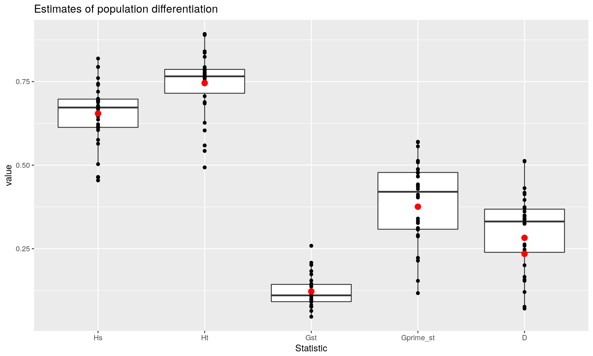
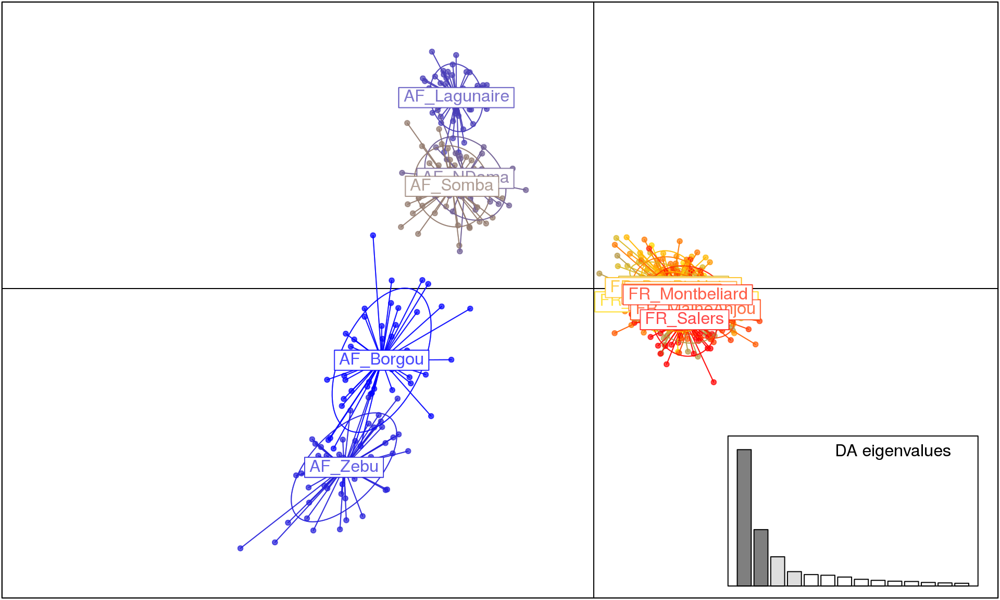

We will analyze a data set of bovine samples from France and West Africa using F-statistics, AMOVA, and Discriminant Analysis of Principal Components (DAPC). We will analyze a data set of bovine samples from France and West Africa. We want to know if differentiation exists between Breeds or if it’s based on geographic separation.
We are going to use the microbov data set from the adegenet package. This data set consists of 704 bovine samples over 30 microsatellite loci (Laloe et al., 2007). We will also need information about the Species, Breed, and Country/Region of origin for each sample. That data is stored in the file called bovine_strata.csv (click here to download).
We are going to use mmod for differentiation summary statistics, pegas for AMOVA, adegenet for DAPC, and we will use reshape2 and ggplot2 for plotting our results.
Loading the required packages:
library("adegenet")
library("pegas")
library("mmod")
library("reshape2")
library("ggplot2")First, we need to load our data. Since the data is distributed with adegenet, we can load it simply by using the function data(). Since we want to associate the different population strata with the data set, we also need to read in bovine_strata.csv as a data frame.
data("microbov", package = "adegenet")
bovine_strata <- read.table("bovine_strata.csv", header = TRUE, sep = ",")The microbov data set is in a “genind” object. This is a way for adegenet to keep the genetic data and deomographic data together. Let’s take a look at what our data looks like:
microbov## /// GENIND OBJECT /////////
##
## // 704 individuals; 30 loci; 373 alleles; size: 1.1 Mb
##
## // Basic content
## @tab: 704 x 373 matrix of allele counts
## @loc.n.all: number of alleles per locus (range: 5-22)
## @loc.fac: locus factor for the 373 columns of @tab
## @all.names: list of allele names for each locus
## @ploidy: ploidy of each individual (range: 2-2)
## @type: codom
## @call: genind(tab = truenames(microbov)$tab, pop = truenames(microbov)$pop)
##
## // Optional content
## @pop: population of each individual (group size range: 30-61)
## @other: a list containing: coun breed spehead(bovine_strata) # the function head shows the first 6 rows of a data frame## Country Breed Species
## 1 AF Borgou BI
## 2 AF Borgou BI
## 3 AF Borgou BI
## 4 AF Borgou BI
## 5 AF Borgou BI
## 6 AF Borgou BIWe can see that our data matches the description above. Now we need to set bovine_strata in microbov’s strata slot.
strata(microbov) <- bovine_strata
microbov## /// GENIND OBJECT /////////
##
## // 704 individuals; 30 loci; 373 alleles; size: 1.1 Mb
##
## // Basic content
## @tab: 704 x 373 matrix of allele counts
## @loc.n.all: number of alleles per locus (range: 5-22)
## @loc.fac: locus factor for the 373 columns of @tab
## @all.names: list of allele names for each locus
## @ploidy: ploidy of each individual (range: 2-2)
## @type: codom
## @call: genind(tab = truenames(microbov)$tab, pop = truenames(microbov)$pop)
##
## // Optional content
## @pop: population of each individual (group size range: 30-61)
## @strata: a data frame with 3 columns ( Country, Breed, Species )
## @other: a list containing: coun breed speIf you look at the bottom of the output, under “Optional content”, you can see that the microbov object now has three strata defined and we can use the function setPop() to set the population from any combination of these strata.
Perhaps the best package for assessing summary statistics for population differentiation is mmod. This package provides differentiation statistics presented in (Miermans and Hedrick, 2011), which scale to the maximum value that can possibly attained, allowing for comparison across measurements. I will not go into terrible detail about these measures or mmod, but you can read more by visiting the paper linked above and viewing the mmod vignette, off of which this section is based.
We will first take a look at the summary statistics for differentiation by breed using the function diff_stats():
setPop(microbov) <- ~Breed # Use ~Country to analyze by country
diff_bov <- diff_stats(microbov)
diff_bov## $per.locus
## Hs Ht Gst Gprime_st D
## INRA63 0.5639660 0.7062861 0.20150495 0.4881151 0.34971094
## INRA5 0.5755958 0.6036883 0.04653482 0.1170902 0.07092092
## ETH225 0.7197762 0.7830126 0.08076038 0.3070142 0.24178276
## ILSTS5 0.4638298 0.5425229 0.14505016 0.2868814 0.15725224
## HEL5 0.6930155 0.7930340 0.12612126 0.4362548 0.34908154
## HEL1 0.6224377 0.7619545 0.18310383 0.5128954 0.39591425
## INRA35 0.4543576 0.4932161 0.07878581 0.1538388 0.07630278
## ETH152 0.6118664 0.6844774 0.10608240 0.2906344 0.20044004
## INRA23 0.7402153 0.8403193 0.11912609 0.4871659 0.41285825
## ETH10 0.6048904 0.7638679 0.20812176 0.5561020 0.43110328
## HEL9 0.6878710 0.7825445 0.12098162 0.4117292 0.32498065
## CSSM66 0.7435578 0.8241031 0.09773687 0.4055186 0.33652218
## INRA32 0.6164876 0.7458078 0.17339623 0.4784952 0.36128538
## ETH3 0.6906295 0.7594622 0.09063352 0.3118679 0.23838521
## BM2113 0.7937328 0.8924249 0.11058869 0.5699368 0.51264352
## BM1824 0.6452860 0.7533117 0.14340108 0.4287573 0.32629621
## HEL13 0.4645259 0.6267022 0.25877730 0.5083896 0.32449809
## INRA37 0.6561603 0.7762477 0.15470239 0.4767948 0.37420069
## BM1818 0.6776821 0.7521718 0.09903286 0.3268863 0.24761394
## ILSTS6 0.6752309 0.7875664 0.14263628 0.4658179 0.37060026
## MM12 0.6917685 0.7674169 0.09857535 0.3402572 0.26295773
## CSRM60 0.6694685 0.7764891 0.13782616 0.4424126 0.34691049
## ETH185 0.6673092 0.7730600 0.13679503 0.4362846 0.34056968
## HAUT24 0.7604078 0.8362990 0.09074642 0.4031941 0.33937643
## HAUT27 0.6939840 0.7413234 0.06385800 0.2225656 0.16574564
## TGLA227 0.7938773 0.8922288 0.11023124 0.5685073 0.51123245
## TGLA126 0.6361034 0.6884037 0.07597335 0.2224826 0.15398900
## TGLA122 0.6985923 0.7714162 0.09440290 0.3333309 0.25887072
## TGLA53 0.8190011 0.8895127 0.07926988 0.4665986 0.41739542
## SPS115 0.5029455 0.5588352 0.10001100 0.2140502 0.12047328
##
## $global
## Hs Ht Gst_est Gprime_st D_het D_mean
## 0.6544857 0.7455902 0.1221911 0.3756321 0.2825120 0.2347223The output in $per.locus are estimates of the following measures:
| Variable | Statistic | Details/Authority |
|---|---|---|
Hs |
\(H_S\) | Heterozygosity with population structure |
Ht |
\(H_T\) | Heterozygosity without population structure |
Gst |
\(G_{st}\) | Nei |
Gprime_st |
\(G_{st}^"\) | Hedrick |
D |
\(D\) | Jost |
The $global refers to global estimates of these statistics. D_het and D_mean represent the average heterozygosity and harmonic mean, respectively.
All of these describe population differentiation, but \(D\) can be interpreted as the amount of population differentiation from 0 (panmixia) to 1 (complete differentiation) (Hedrick and Miermans, 2011).
You could choose to report the global versions of these statistics, but it might be additionally useful to show them as a boxplots with points showing their estimates in red. I prefer to use ggplot2 here because it allows me to easily overlay the observations and estimates.
per.locus <- melt(diff_bov$per.locus, varnames = c("Locus", "Statistic"))
stats <- c("Hs", "Ht", "Gst", "Gprime_st", "D", "D")
glob <- data.frame(Statistic = stats, value = diff_bov$global)
head(per.locus)## Locus Statistic value
## 1 INRA63 Hs 0.5639660
## 2 INRA5 Hs 0.5755958
## 3 ETH225 Hs 0.7197762
## 4 ILSTS5 Hs 0.4638298
## 5 HEL5 Hs 0.6930155
## 6 HEL1 Hs 0.6224377head(glob)## Statistic value
## Hs Hs 0.6544857
## Ht Ht 0.7455902
## Gst_est Gst 0.1221911
## Gprime_st Gprime_st 0.3756321
## D_het D 0.2825120
## D_mean D 0.2347223ggplot(per.locus, aes(x = Statistic, y = value)) +
geom_boxplot() +
geom_point() +
geom_point(size = rel(3), color = "red", data = glob) +
ggtitle("Estimates of population differentiation")
We can see that we have evidence for moderate differentiation in these populations at the level of breed. Of course bootstrapping would be helpful to get confidence intervals, so here we use the function chao_bootstrap() to simulate new data sets and summarize_bootstrap() to calculate statistical summarize based on those simulations. Since these can take a while, we’re only going to perform 10 replicates. You will want to increase that number for a more robust analysis:
set.seed(20151219) # Be sure to set a seed for any random analysis!
bs_reps <- chao_bootstrap(microbov, nreps = 10)
summarise_bootstrap(bs_reps, D_Jost) # Using the D_Jost function to summarize.##
## Estimates for each locus
## Locus Mean 95% CI
## INRA63 0.3497 (0.329-0.371)
## INRA5 0.0709 (0.048-0.094)
## ETH225 0.2418 (0.215-0.269)
## ILSTS5 0.1573 (0.131-0.183)
## HEL5 0.3491 (0.321-0.377)
## HEL1 0.3959 (0.371-0.421)
## INRA35 0.0763 (0.043-0.109)
## ETH152 0.2004 (0.157-0.244)
## INRA23 0.4129 (0.391-0.434)
## ETH10 0.4311 (0.409-0.453)
## HEL9 0.3250 (0.287-0.363)
## CSSM66 0.3365 (0.310-0.363)
## INRA32 0.3613 (0.334-0.389)
## ETH3 0.2384 (0.184-0.293)
## BM2113 0.5126 (0.480-0.545)
## BM1824 0.3263 (0.297-0.356)
## HEL13 0.3245 (0.294-0.355)
## INRA37 0.3742 (0.322-0.426)
## BM1818 0.2476 (0.231-0.264)
## ILSTS6 0.3706 (0.352-0.389)
## MM12 0.2630 (0.227-0.299)
## CSRM60 0.3469 (0.325-0.369)
## ETH185 0.3406 (0.319-0.362)
## HAUT24 0.3394 (0.302-0.377)
## HAUT27 0.1657 (0.129-0.203)
## TGLA227 0.5112 (0.486-0.536)
## TGLA126 0.1540 (0.122-0.186)
## TGLA122 0.2589 (0.227-0.291)
## TGLA53 0.4174 (0.382-0.453)
## SPS115 0.1205 (0.095-0.146)
##
## Global Estimate based on average heterozygosity
## 0.2825 (0.277-0.288)
##
## Global Estimate based on harmonic mean of statistic
## 0.2347 (0.219-0.250)AMOVA is a classical method of assessing population differentiation by evaluating where the most variation exists in a hierarchical population structure (Excoffier et al., 1992). We can use this to assess population differentiation in countries and breeds by using the amova() function in pegas. All we need are:
Note: we are using the syntax
pegas::amova()because there is another function calledamova()in the ade4 package.
bov_dist <- dist(microbov) # Euclidean distance
bov_stra <- strata(microbov)
bov_amova <- pegas::amova(bov_dist ~ Country/Breed, data = bov_stra, nperm = 0)
bov_amova##
## Analysis of Molecular Variance
##
## Call: pegas::amova(formula = bov_dist ~ Country/Breed, data = bov_stra,
## nperm = 0)
##
## SSD MSD df
## Country 3358.968 3358.96844 1
## Breed 4883.784 375.67569 13
## Error 28483.616 41.34052 689
## Total 36726.368 52.24234 703
##
## Variance components:
## Country Breed Error
## 9.578926 7.156947 41.340516
##
## Variance coefficients:
## a b c
## 46.71477 48.10283 310.40625If the population was panmictic, we would expect to see extremely small variance components for Country and Breed compared to Error (i.e. the variation from individuals within populations). We don’t see that and further suspect moderate differentiation. To test for this, you can boostrap replicates by setting the nperm argument. Again, because these bootstraps may take a long time, we’ll set it to 10:
set.seed(20151219)
bov_amova <- pegas::amova(bov_dist ~ Country/Breed, data = bov_stra, nperm = 10)
bov_amova##
## Analysis of Molecular Variance
##
## Call: pegas::amova(formula = bov_dist ~ Country/Breed, data = bov_stra,
## nperm = 10)
##
## SSD MSD df
## Country 3358.968 3358.96844 1
## Breed 4883.784 375.67569 13
## Error 28483.616 41.34052 689
## Total 36726.368 52.24234 703
##
## Variance components:
## sigma2 P.value
## Country 9.5789 0
## Breed 7.1569 0
## Error 41.3405
##
## Variance coefficients:
## a b c
## 46.71477 48.10283 310.40625Now we have evidence that these are significantly different.
It is possible to do the same analyses in different packages, which I will list here.
The vegan package has the function adonis() that implements a multivariate AMOVA and takes the same kind of arguments as the pegas implementation of amova():
library("vegan")
set.seed(20151219)
res <- adonis(bov_dist ~ Country/Breed, data = bov_stra, permutations = 99)The package ade4 implements the original model, but it requires an abundance matrix of haplotypes per population. The advantage of this version is the fact that it calculates \(\phi\) statistics for you. The package poppr provides a wrapper for the ade4 version that will sanitize the data and allows for calculation of within sample variance.
library("poppr")
res <- poppr.amova(microbov, ~Country/Breed, within = FALSE)
set.seed(20151219)
randtest(res, nrepet = 99)Finally, we will use DAPC in order to assess which populations have significant structure (Jombart et al., 2011). For this, we will use the function dapc() from adegenet.
Warning: This analyis is sensitive to the number of principal components you choose, so by default, you should run this function with just the data set and without any options beforehand (
dapc(microbov)).
setPop(microbov) <- ~Country/Breed
bov_dapc <- dapc(microbov, n.pca = 100, n.da = 4) # 100 principal components; 4 discriminant functions
scatter(bov_dapc)
From this output, we can see that there is a lot of differentiation based on geography, but also that African breeds are a lot more differentiated than European breeds.
We have assessed differentiation of these cattle breeds using tools in R. From the diversity statistics, we can clearly see that there is moderate differentiation among breeds. This is supported and further bolstered by the results of AMOVA, showing us that there is significant differentiation among countries and breeds. The DAPC analysis gives us a clear picture showing highly differentiated African breeds with low diversity in the French breeds. Further steps could be to assess factors such as inbreeding coefficients.
Laloe D., Jombart T., Dufour A-B., Moazami-Goudarzi K. 2007. Consensus genetic structuring and typological value of markers using multiple co-inertia analysis. Genetics Selection Evolution 39:545–567. Available at: http://dx.doi.org/10.1051/gse:2007021
Meirmans, P.G. and Hedrick, P.W., 2011. Assessing population structure: FST and related measures. Molecular Ecology Resources, 11:5-18. Available at: http://dx.doi.org/10.1111/j.1755-0998.2010.02927.x
Excoffier L., Smouse PE., Quattro JM. 1992. Analysis of molecular variance inferred from metric distances among dNA haplotypes: Application to human mitochondrial dNA restriction data. Genetics 131:479–491. Available at: http://www.genetics.org/content/131/2/479.abstract
Jombart T., Devillard S., Balloux F. 2010. Discriminant analysis of principal components: A new method for the analysis of genetically structured populations. BMC genetics 11:94. Available at: http://www.biomedcentral.com/1471-2156/11/94
This shows us useful information for reproducibility. Of particular importance are the versions of R and the packages used to create this workflow. It is considered good practice to record this information with every analysis.
options(width = 100)
devtools::session_info()## Session info ---------------------------------------------------------------------------------------## setting value
## version R version 3.3.2 (2016-10-31)
## system x86_64, linux-gnu
## ui X11
## language (EN)
## collate en_US.UTF-8
## tz <NA>
## date 2017-01-03## Packages -------------------------------------------------------------------------------------------## package * version date source
## ade4 * 1.7-5 2016-12-13 CRAN (R 3.3.2)
## adegenet * 2.0.1 2016-02-15 CRAN (R 3.3.2)
## ape * 4.0 2016-12-01 CRAN (R 3.3.2)
## assertthat 0.1 2013-12-06 CRAN (R 3.3.2)
## backports 1.0.4 2016-10-24 CRAN (R 3.3.2)
## boot 1.3-18 2016-02-23 CRAN (R 3.3.2)
## cluster 2.0.5 2016-10-08 CRAN (R 3.3.2)
## coda 0.19-1 2016-12-08 CRAN (R 3.3.2)
## colorspace 1.3-2 2016-12-14 CRAN (R 3.3.2)
## DBI 0.5-1 2016-09-10 CRAN (R 3.3.2)
## deldir 0.1-12 2016-03-06 CRAN (R 3.3.2)
## devtools 1.12.0 2016-12-05 CRAN (R 3.3.2)
## digest 0.6.10 2016-08-02 CRAN (R 3.3.2)
## dplyr 0.5.0 2016-06-24 CRAN (R 3.3.2)
## evaluate 0.10 2016-10-11 CRAN (R 3.3.2)
## gdata 2.17.0 2015-07-04 CRAN (R 3.3.2)
## ggplot2 * 2.2.0 2016-11-11 CRAN (R 3.3.2)
## gmodels 2.16.2 2015-07-22 CRAN (R 3.3.2)
## gtable 0.2.0 2016-02-26 CRAN (R 3.3.2)
## gtools 3.5.0 2015-05-29 CRAN (R 3.3.2)
## htmltools 0.3.5 2016-03-21 CRAN (R 3.3.2)
## httpuv 1.3.3 2015-08-04 CRAN (R 3.3.2)
## igraph 1.0.1 2015-06-26 CRAN (R 3.3.2)
## knitr 1.15.1 2016-11-22 CRAN (R 3.3.2)
## labeling 0.3 2014-08-23 CRAN (R 3.3.2)
## lattice 0.20-34 2016-09-06 CRAN (R 3.3.2)
## lazyeval 0.2.0 2016-06-12 CRAN (R 3.3.2)
## LearnBayes 2.15 2014-05-29 CRAN (R 3.3.2)
## magrittr 1.5 2014-11-22 CRAN (R 3.3.2)
## MASS 7.3-45 2016-04-21 CRAN (R 3.3.2)
## Matrix 1.2-7.1 2016-09-01 CRAN (R 3.3.2)
## memoise 1.0.0 2016-01-29 CRAN (R 3.3.2)
## mgcv 1.8-16 2016-11-07 CRAN (R 3.3.2)
## mime 0.5 2016-07-07 CRAN (R 3.3.2)
## mmod * 1.3.2 2016-09-16 CRAN (R 3.3.2)
## munsell 0.4.3 2016-02-13 CRAN (R 3.3.2)
## nlme 3.1-128 2016-05-10 CRAN (R 3.3.2)
## pegas * 0.9 2016-04-16 CRAN (R 3.3.2)
## permute 0.9-4 2016-09-09 CRAN (R 3.3.2)
## plyr 1.8.4 2016-06-08 CRAN (R 3.3.2)
## R6 2.2.0 2016-10-05 CRAN (R 3.3.2)
## Rcpp 0.12.8 2016-11-17 CRAN (R 3.3.2)
## reshape2 * 1.4.2 2016-10-22 CRAN (R 3.3.2)
## rmarkdown 1.3 2016-12-21 CRAN (R 3.3.2)
## rprojroot 1.1 2016-10-29 CRAN (R 3.3.2)
## scales 0.4.1 2016-11-09 CRAN (R 3.3.2)
## seqinr 3.3-3 2016-10-13 CRAN (R 3.3.2)
## shiny 0.14.2 2016-11-01 CRAN (R 3.3.2)
## sp 1.2-4 2016-12-22 CRAN (R 3.3.2)
## spdep 0.6-8 2016-09-21 CRAN (R 3.3.2)
## stringi 1.1.2 2016-10-01 CRAN (R 3.3.2)
## stringr 1.1.0 2016-08-19 CRAN (R 3.3.2)
## tibble 1.2 2016-08-26 CRAN (R 3.3.2)
## vegan 2.4-1 2016-09-07 CRAN (R 3.3.2)
## withr 1.0.2 2016-06-20 CRAN (R 3.3.2)
## xtable 1.8-2 2016-02-05 CRAN (R 3.3.2)
## yaml 2.1.14 2016-11-12 CRAN (R 3.3.2)